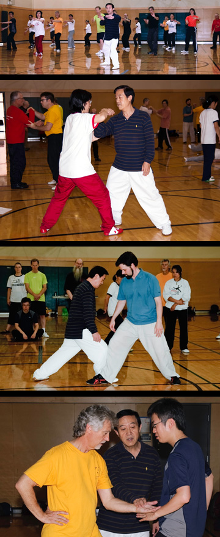

|
|
|
<TAI CHI & SEMINAR> |
Chen TaiChi Group Class for Beginners in January 8, 2011 Saturday 8:30AM – 9:30AM Starts on the 8th of January 2010 on going Fees: $150/10 Weeks/ 15 Students. $50 Uniforms and Registration Fee Authentic and detailed Chen Taichi basic silk reeling movements and Chinese traditional medicine Qigong warm-ups will be taught step by step following physical learning science. Sifu Hong will also explain how Taichi originated from ancient Chinese philosophy and Chinese medicine. As a beginning student the skill of self-centering, body relaxation and slow breathing while learning and practicing those movements are emphasized. You expect to become more flexible, improve strength of your legs, become more coordinated/balanced and relaxed in an energetic way. If you wish to visit Master Hong's Chen Taichi beginning class and register at school, it's on Tuesday evening 7:05pm-8:05pm. Grandmaster Chen Zhenglei's Chen Taichi qigong, silk-reeling, push hands and old frame 2 seminar was a huge success!! Each section GM Chen had received several big around applauses. Catherine Kehl who had worked Microsoft and flew from Cleverland to attend this seminar said " This is the best seminar in my life " Grandmaster Chen has been offer Chen Taichi seminars at Chinese Wushu & Taichi Academy LLC since 1998. GM Chen will return Seattle in 2012. All the details will be announced later.  Private lesson Yang Tai Chi, Instructor James Guidon, by appointment only 206-527-0144 Registration form Chen Taichi group and Qigong class at Chinese Wushu & Taichi Academy LLC by Sifu Viola Brumbaugh Monday & Thursday, 6:00 p.m. to 7:00 p.m. For class enrollment, please contact Wise Orchid Martial Arts – Tai Chi, QiGong & Kung Fu, 206-321-0613 www.wise-orchid.com Willow Moon Internal Arts class at Chinese Wushu and Tai chi Academy studio Sunday: Basic Taiji, XingYi, BaGua 9 AM - 11 AM Sifu Blake Emery 425-971-7869 For more Wushu and Taichi classes on other schools: |